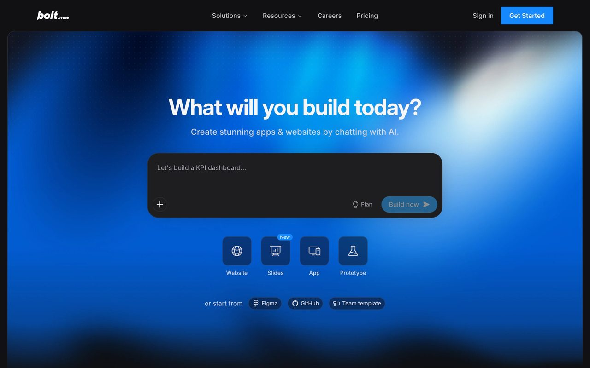
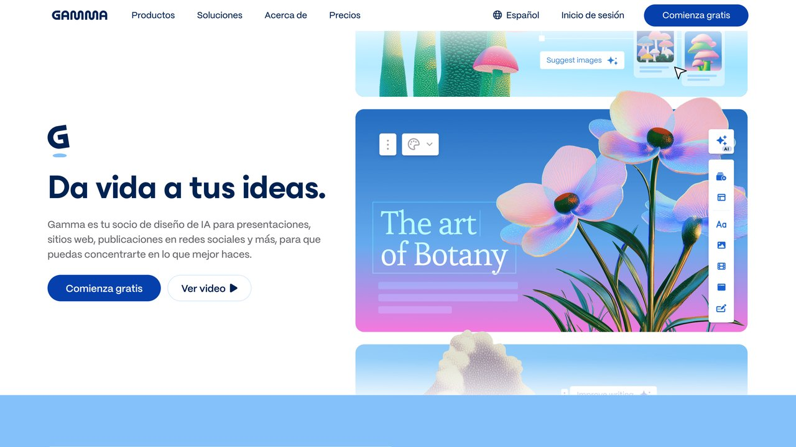

Los mejores asistentes de IA para quien no programa (2026)
Una selección de herramientas pensadas para trabajo de oficina real, sin necesidad de saber programar. Qué soluciona cada una, curva de aprendizaje y coste real.
Entre 2023 y 2024 el mercado de IA vivió una avalancha de interfaces conversacionales casi idénticas: todas prometían resolver la jornada laboral desde una caja de texto vacía. En 2026 el paradigma ha cambiado: las herramientas que de verdad ahorran tiempo a perfiles no técnicos ya no son solo "chatbots" — tienen acceso a archivos locales, navegan por webs y ejecutan código en entornos aislados por ti.
La brecha ya no está entre quien sabe programar y quien no; está entre quien sabe estructurar un problema en instrucciones claras para un agente y quien sigue tratando al modelo como un oráculo de respuestas rápidas. Esta selección se centra en herramientas que funcionan sin abrir una terminal de programador.
Esta tensión no es exclusiva de quien no programa: la encuesta de desarrolladores de Stack Overflow de 2025 encontró que el 84% ya usa o planea usar IA en su trabajo, pero solo un 33% confía en la precisión de lo que genera (frente a un 46% que desconfía). Es la misma lección para cualquier perfil: usa la herramienta para el trabajo mecánico, pero revisa el resultado antes de darlo por bueno.
El criterio de esta selección no es "cuál suena más impresionante en una demo", sino cuál sobrevive al uso diario en un puesto real: alguien que gestiona proveedores, cierra informes mensuales, coordina un equipo o atiende clientes, no alguien que ya dedica su jornada a evaluar herramientas de IA. Cada entrada de esta lista lleva al menos varias semanas probada en ese tipo de trabajo antes de entrar en la guía, y se retira si deja de sostenerse — por eso esta lista cambia con el tiempo y no se limita a repetir el ranking de lanzamientos más recientes.
¿Cuál necesitas hoy?
Sube normativas, guías de estilo y manuales extensos. Permite iterar textos largos sin perder el tono editorial.
Limpia CSV desordenados, cruza bases heterogéneas y genera informes sin escribir fórmulas a mano.
Conecta correo, formularios y bases de datos describiendo la lógica en lenguaje normal.
Genera informes rastreando fuentes públicas con enlaces a cada dato citado.
Qué buscamos al elegir estas herramientas
Que exista la opción de no usar tus documentos para reentrenar el modelo base.
Que permita exportar tus datos en formatos abiertos, sin atarte a una extensión propietaria.
Preferimos planes mensuales claros frente a sistemas de créditos opacos.
Las herramientas, una a una
Claude Projects (Anthropic)
Resuelve el mayor defecto de los chats normales: la falta de memoria. Creas carpetas temáticas con tus normativas, actas y documentos, y cualquier pregunta posterior opera sobre esa biblioteca fija sin repetir contexto cada vez.
Cuándo usarlo: direcciones de comunicación, despachos y equipos que manejan manuales pesados de forma recurrente.
La diferencia frente a subir el mismo documento a un chat normal cada vez es que el proyecto recuerda todo el conjunto de archivos entre sesiones: puedes preguntar hoy sobre la política de vacaciones y mañana sobre el manual de marca sin volver a adjuntar nada, y el asistente responde citando de qué documento concreto sale cada dato, lo que facilita comprobarlo antes de repetirlo en un correo o una presentación.
Cursor y Claude Code en modo guiado
Nacido como editor de código, en la práctica lo usan también perfiles de marketing y finanzas: le das una carpeta con hojas de cálculo desordenadas y le pides en lenguaje normal que cruce y limpie los datos. No hace falta mirar el código: la herramienta lee tus archivos locales, ejecuta la corrección con confirmación previa y, si algo falla, corrige el error ella misma.
Cuándo usarlo: limpieza recurrente de hojas de cálculo y bases de clientes.
El punto que suele sorprender a quien lo prueba por primera vez sin venir de un puesto técnico es que puedes pedirle explícitamente que te enseñe paso a paso qué va a hacer antes de tocar el archivo original, y que trabaje siempre sobre una copia. Esa combinación (explicación previa más copia de seguridad automática) es lo que hace razonable delegar una limpieza de datos sin haber escrito una fórmula de hoja de cálculo en años.
Bolt.new / Lovable
Describes en lenguaje normal la interfaz que necesitas (un formulario, una calculadora interna, un portal de onboarding) y la herramienta monta la aplicación en el navegador. Muy útil para herramientas internas de equipo; para una app de cara al público sigue haciendo falta supervisión técnica.

Cuándo usarlo: validar rápido una idea de herramienta interna antes de pedir presupuesto a un equipo de desarrollo, o resolver un formulario que hoy se gestiona por correo suelto.
La trampa habitual es confundir "funciona en la demo" con "está lista para producción": estas herramientas priorizan que algo visualmente funcional aparezca en minutos, no necesariamente que gestione bien errores de usuario, picos de tráfico o datos sensibles. Para una herramienta que van a usar solo cinco personas de tu equipo, ese nivel basta; para algo que va a ver un cliente externo, conviene que alguien con criterio técnico revise al menos la parte de seguridad antes de publicarla.
Perplexity Pro y Gemini Deep Research
El modo de investigación profunda rastrea muchas páginas, descarta contradicciones y entrega un informe con enlaces a cada cifra citada. Funciona mejor con misiones concretas ("compara X e Y con datos del último trimestre") que con resúmenes genéricos.
Un uso menos evidente pero igual de rentable: vigilancia periódica de un tema. En vez de relanzar la misma búsqueda cada lunes, algunas de estas herramientas permiten guardar la consulta y recibir solo lo que cambió desde la última vez, lo que convierte una tarea manual repetitiva en un informe que llega solo cuando hay algo nuevo que revisar.
Google NotebookLM (ahora Gemini Notebook)
Google cambió el nombre de NotebookLM a Gemini Notebook el 16 de julio de 2026, según su blog de Workspace; los enlaces a cuadernos compartidos siguen funcionando. A diferencia de un chat general, NotebookLM solo responde con lo que hay en los documentos que subes (PDFs, transcripciones, notas), y cada afirmación viene con el fragmento exacto de origen enlazado, así que comprobar una cita es un clic, no una búsqueda aparte. También genera un resumen en formato de conversación de audio a partir de tus propios documentos, útil para repasar un informe largo durante un trayecto en vez de leerlo en pantalla.
Cuándo usarlo: preparar una reunión a partir de varios documentos de referencia, o repasar actas y normativas largas sin perder la trazabilidad de cada dato.
Modo agente de ChatGPT / Gemini en Workspace
Estos modos de agente pueden abrir una página, rellenar un formulario o navegar varios pasos por tu cuenta, en vez de limitarse a redactar texto que luego tienes que copiar tú mismo. El ahorro real está en tareas repetitivas de varios clics (comparar precios en varias webs, rellenar un mismo formulario con datos distintos cada vez), no en sustituir el juicio de una decisión importante — sigue haciendo falta revisar el resultado antes de confirmar cualquier paso que tenga efecto real, como enviar un correo o completar una compra.
Cuándo usarlo: tareas repetitivas de varios pasos en la web que hoy haces a mano y siguen siempre la misma lógica.

Antes de conectar tu empresa: tres reglas de seguridad
Desactiva el entrenamiento con tus datos
Casi todas estas herramientas tienen un ajuste de "usar mis datos para mejorar el modelo". Mantenlo desactivado. En los planes de empresa suele venir desactivado por defecto; en los planes personales, no siempre, así que merece la pena comprobarlo aunque ya uses la herramienta desde hace tiempo.
Anonimiza antes de subir balances o contratos
Usa "Cliente A" en vez de razones sociales reales. El análisis funciona igual y eliminas el riesgo legal.
Cuidado con extensiones de navegador
Evita extensiones no verificadas que prometen "resumir cualquier web": algunas leen todo lo que copias y pegas. Antes de instalar cualquiera, revisa cuántos usuarios tiene, desde cuándo existe y qué permisos pide — si pide acceso a "leer y modificar todos los datos de todas las webs que visitas" para una función que solo debería necesitar leer el texto visible, es una señal de alarma suficiente para no instalarla.
Confirma dónde vive el plan de empresa, no solo el personal
Muchas de estas herramientas ofrecen un plan "Team" o "Business" con condiciones de datos distintas al plan personal del mismo producto (sin entrenamiento con tus datos por defecto, retención configurable). Usar la cuenta personal de alguien del equipo para trabajo de la empresa salta justo esa protección.
Ninguna de estas cuatro reglas exige conocimiento técnico, solo el hábito de revisar la configuración de privacidad antes de subir el primer documento sensible, en vez de después de que ya esté cargado. La mayoría de las herramientas de esta lista tienen esa opción a un clic de distancia en el menú de ajustes de la cuenta.
Planes y precios en octubre de 2026
Precios mensuales de los planes individuales según cada proveedor (revisados el 17 de octubre de 2026). Cambian con frecuencia: comprueba la página antes de pagar.
| Servicio | Qué hay gratis | Planes de pago | Fuente |
|---|---|---|---|
| Claude (Anthropic) | Chat, búsqueda web, memoria y hasta 5 Proyectos; sin Claude Code ni Research | Pro: 20 $ al mes (17 $ al mes con pago anual); Max desde 100 $ | claude.com/pricing |
| ChatGPT (OpenAI) | Plan Free; Go cuesta 8 $ | Plus 20 $; Pro desde 100 $ (también 200 $ y 500 $) | learn.chatgpt.com/docs/pricing |
| Gemini (Google) | Sin suscripción solo el modelo Flash-Lite desde el 9 de octubre, según nuestra noticia | AI Plus, AI Pro y AI Ultra (precios no verificados) | noticia del cambio |
| Penpot | Plan Professional a 0 $, sin límites declarados | Unlimited: 7 $ por editor al mes (máx. 175 $) | penpot.app/pricing |
Los precios de Gemini y los de Google AI Plus/Pro/Ultra no los hemos podido confirmar en una página oficial legible, por eso no los damos. Lo que sí sabemos es que Google ha pasado a límites de uso basados en cómputo que se renuevan cada cinco horas.
Qué ha cambiado desde la última revisión
- NotebookLM se llama Gemini Notebook desde el 16 de julio de 2026. Los límites oficiales de su plan estándar son 100 cuadernos y 50 fuentes por cuaderno; Plus sube a 200 y 100, Pro a 500 y 300, según la página de ayuda de Google, que avisa de que pueden cambiar.
- Gems pasan a ser «skills». Google las anunció el 30 de septiembre y retirará los Gems; si usabas Gems para tareas repetitivas, mira la noticia.
- Agentes en la nube, no para todos en Europa. Los «dots» de OpenAI no están disponibles para suscriptores Pro individuales en el Espacio Económico Europeo, el Reino Unido ni Suiza, aunque sí en planes de empresa (noticia). Si estás en España, comprueba que tu plan incluya lo que ves en un anuncio.
- Gemini gratis, más limitado. Quien no pague solo elige Flash-Lite desde el 9 de octubre. Si recomendabas Gemini Deep Research para una tarea, verifica antes qué plan lo incluye: la página de Google lo cuenta entre las funciones que gastan más límite, sin decir qué plan lo incluye.
- Claude Code en el plan Pro. Según la página de precios, el plan gratuito no incluye Claude Code ni Research. Ambos llegan con Pro.
Un ejemplo para empezar esta semana
Supongamos que cada viernes recopilas a mano las incidencias de la semana de tres hojas de cálculo. Un plan realista, en tres pasos: primero, pide a la herramienta que te explique qué columnas tiene cada hoja y qué problemas ve (duplicados, fechas en formatos distintos), sin tocar nada. Segundo, pídele que trabaje sobre una copia y que te enseñe el resultado de diez filas antes de procesar todo. Tercero, guarda el prompt que funcionó y reutilízalo el viernes siguiente comparando el resultado con el que habrías sacado a mano. Si en tres semanas no ahorras tiempo real después de revisar, deja esa tarea y prueba otra.
Cómo pasar de curiosidad a hábito de trabajo real
El error más común al adoptar una de estas herramientas es empezar por la tarea más compleja del puesto, con la esperanza de que "si funciona con esto, funciona con todo". Suele salir al revés: la primera experiencia mala con una tarea demasiado ambiciosa hace que se abandone la herramienta antes de descubrir para qué sirve de verdad. Es más eficaz empezar por una tarea pequeña, repetitiva y de bajo riesgo (resumir un documento, ordenar una hoja de cálculo, redactar un primer borrador de correo) que ya hagas cada semana, y ampliar el uso solo después de que esa primera tarea funcione de forma fiable durante varias semanas seguidas.
Una vez que la herramienta forma parte del flujo habitual, el siguiente paso natural no es "usarla más", sino "usarla en más sitios sin repetir la configuración": guardar el prompt que funcionó, reutilizar la misma carpeta de documentos de referencia en vez de subirlos de nuevo cada vez, o fijar una instrucción de fondo si la herramienta lo permite (Claude Projects y los GPTs personalizados de ChatGPT lo ofrecen). Ese paso de sistematizar es el que separa a quien usa la IA de forma puntual de quien la ha integrado de verdad en su forma de trabajar. El siguiente escalón, cuando la instrucción de fondo ya no basta y quieres que el asistente lea tus notas y tus tareas, está en construir tu propio asistente personal con IA.
Errores comunes al adoptar estas herramientas sin perfil técnico
Pedir la tarea completa de una sola vez
"Organízame todo el trimestre" da peor resultado que pedir mes a mes con revisión intermedia. Cuanto más grande la petición, más difícil detectar dónde se coló un error concreto dentro del resultado.
No guardar lo que ya funcionó
Volver a escribir desde cero la misma instrucción cada semana, en vez de guardar el prompt o la configuración que dio buen resultado la primera vez, es la forma más común de tirar a la basura el tiempo ya invertido en aprender a pedir bien la tarea.
Tratar cada herramienta nueva como sustituto de la anterior
Rara vez una herramienta nueva reemplaza a la que ya usas para todo; suele cubrir un hueco concreto. Adoptar una quinta herramienta sin haber consolidado el uso de las cuatro anteriores dispersa el aprendizaje en vez de acumularlo.
Medir el éxito por "lo rápido que fue" en vez de "lo correcto que fue"
Una tarea resuelta en 30 segundos que hay que rehacer al día siguiente por un error no detectado a tiempo no ahorró tiempo, lo desplazó. El ahorro real se mide después de la revisión, no en el momento en que llega la respuesta.
Esperar que la herramienta pregunte lo que le falta saber
Salvo que se le indique explícitamente que puede pedir aclaraciones, la tendencia por defecto de estos asistentes es rellenar cualquier hueco de información con una suposición razonable en vez de detenerse a preguntar. Si el contexto que le diste es incompleto, es más probable que complete el hueco por su cuenta que que te avise del vacío.
Excalidraw: la pizarra gratis para explicar ideas
Muchas veces, antes de pedirle algo a una IA, ayuda dibujarlo: un flujo, un esquema de una web o los pasos de un proceso. Excalidraw es una pizarra virtual gratuita y de código abierto (MIT) con un estilo que parece dibujado a mano.
Cómo usarla
- Entra en excalidraw.com. No hace falta crear cuenta.
- Usa las herramientas de rectángulo, círculo, rombo, flecha, línea, dibujo libre y texto. Las flechas se quedan pegadas a las cajas aunque las muevas.
- Para trabajar con otras personas, inicia una sesión colaborativa y comparte el enlace: veréis los cambios en tiempo real, con cifrado de extremo a extremo.
- Exporta a PNG o SVG, o cópialo al portapapeles para pegarlo en un documento o en el chat con tu IA.
También funciona sin conexión como aplicación web instalable y tiene modo oscuro.
Lo honesto: la versión gratuita guarda los dibujos en tu navegador. Si borras los datos del navegador o cambias de ordenador, los pierdes, así que descarga el archivo .excalidraw de lo que quieras conservar. Existe un plan de pago con más funciones, opcional.
Código: github.com/excalidraw/excalidraw
Deja de pagar por estas 5 apps
Antes de sumar otra suscripción de IA, revisa las que ya pagas. Estas cinco alternativas son de código abierto y tienen versión gratuita:
- AppFlowy en lugar de Notion: espacio de trabajo con documentos, proyectos y wikis. Escritorio (Windows, macOS, Linux), iPhone y Android. GitHub.
- Joplin en lugar de Evernote: notas y tareas que funcionan sin conexión, con búsqueda completa y sincronización cifrada. Importa las notas exportadas de Evernote. joplinapp.org.
- LanguageTool en lugar de Grammarly: corrector de estilo y gramática para más de 25 idiomas, español incluido. languagetool.org.
- Jitsi Meet en lugar de Zoom: videollamadas seguras desde el navegador o su app. meet.jit.si.
- Audacity en lugar de Adobe Audition: grabar, cortar y limpiar audio para podcasts o vídeos. audacityteam.org.
Lo honesto: «gratis» no siempre significa sin límites. LanguageTool reserva parte de sus funciones a la versión premium, y alguna sincronización en la nube puede tener coste. Pruébalas unas semanas antes de cancelar lo que pagas ahora.
Presenton: presentaciones con IA que exportas a PowerPoint
Presenton es un generador de presentaciones con inteligencia artificial de código abierto (Apache-2.0), alternativa a servicios como Gamma o Beautiful AI, sin suscripción obligatoria.
Cómo usarlo
- Descarga la app de escritorio desde presenton.ai (Mac, Windows o Linux) o instálalo con Docker.
- Configura el modelo: tu clave de OpenAI, Gemini, Anthropic u otros proveedores, o un modelo local con Ollama o LM Studio.
- Crea una presentación a partir de un tema, de un documento que subas o de tu propia plantilla de PowerPoint.
- Elige una plantilla (pitch deck, informe de negocio, clase…) y genera.
- Retoca arrastrando elementos y exporta a PPTX editable.
También ofrece una API para generar presentaciones de forma automática.
Lo honesto: la aplicación es gratuita, pero si usas un modelo en la nube pagas el consumo con tu clave. Con modelos locales no pagas nada, aunque necesitas un ordenador con buena memoria y el resultado suele ser más sencillo. Revisa siempre los datos y cifras de las diapositivas.
Código: github.com/presenton/presenton
Penpot: la alternativa libre a Figma
Si diseñas pantallas para una app o una web (y luego se las pasas a una IA para que las programe), Penpot es una plataforma de diseño de código abierto (MPL-2.0) que funciona en el navegador.
Qué puedes hacer
- Diseñar pantallas y crear componentes reutilizables.
- Montar prototipos interactivos para enseñar cómo se navega.
- Colaborar en tiempo real con tu equipo.
- Inspeccionar el código de cada elemento, útil para quien programa o para pasárselo a tu agente de IA.
Cómo empezar
- Crea una cuenta gratuita en penpot.app.
- Empieza un proyecto nuevo o usa una de las plantillas y bibliotecas de su web.
- Comparte el archivo con tu equipo para comentar y editar.
Según su página de precios, el plan Professional en la nube cuesta 0 $ por usuario y es completo, sin límites ni herramientas recortadas. Hay un plan Unlimited de pago para equipos que quieran apoyar el proyecto. También puedes instalarlo en tu propio servidor.
Lo honesto: si vienes de Figma, la interfaz es diferente y no encontrarás todos los plugins a los que estás acostumbrado.
Código: github.com/penpot/penpot
Preguntas frecuentes
Ningún fabricante paga por aparecer en esta lista ni revisa el contenido antes de publicarse.
Ninguna herramienta de esta lista resuelve el trabajo por ti de principio a fin, y esa no es su promesa real: la promesa es quitarte el primer 70% mecánico de una tarea (el borrador inicial, la limpieza de datos, la búsqueda dispersa en varias fuentes) para que dediques tu tiempo al 30% que sí requiere tu criterio — decidir, priorizar, y responder por el resultado final. Empieza por una sola herramienta de esta lista, en una sola tarea recurrente de tu semana, y solo cuando esa combinación funcione de forma fiable, añade la siguiente. Vuelve a esta guía dentro de unos meses: el panorama cambia rápido, y esta lista se revisa para reflejar qué sigue mereciendo la pena y qué ha dejado de sostenerse frente a alternativas mejores.